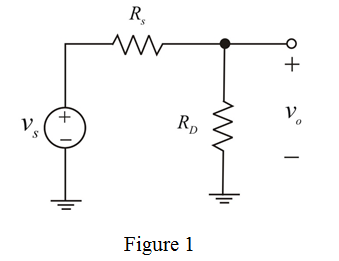
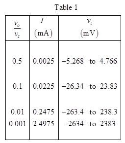

The dynamic resistance of the diode is,
By using the voltage division rule,
Substitute  for
for  in equation.
in equation.
The small-signal voltage gain of the amplifier is,
……. (1)
Substitute and in equation (1).
…… (2)
For small signal model are short circuited, dc current source is replaced by open circuit and diode is replaced with rd.
The modified circuit is shown in Figure 1.

The dynamic resistance of the diode is,
By using the voltage division rule,
Substitute for in equation.
The small-signal voltage gain of the amplifier is,
……. (1)
Substitute and in equation (1).
…… (2)
It is given that dc diode current is limited to  variations.
variations.
Thus, the range of diode current is from .
Equation for diode current is,
From diode current equation the change in diode voltage is,
Here and is varying from .
The voltage  for
for  is .
is .
The voltage  for
for  is .
is .
The diode voltage varies from to .
Diode is across the output terminals , hence the range of output voltage change is,
By using gain formula the range of input signal is ,
Thus, the range of input signal is,
…… (3)
Substitute in equation (1).
Substitute in equation (3).
Consider the voltage gain .
Substitute in equation (1).
Substitute in equation (3).
Consider the voltage gain  .
.
Substitute  in equation (1).
in equation (1).
Substitute  in equation (3).
in equation (3).
Consider the voltage gain .
Substitute in equation (1).
Substitute in equation (3).

Therefore, current flowing through the current source and input voltage range at different gains are obtained.